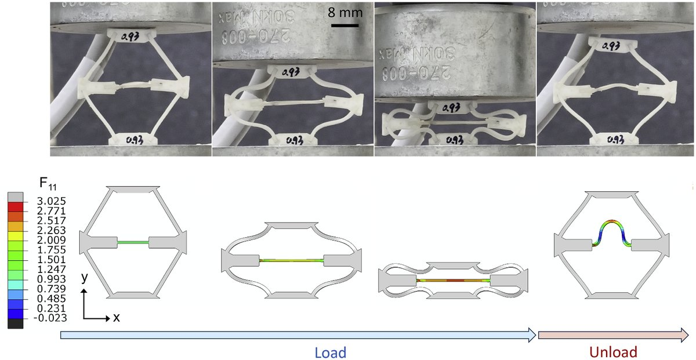

About
I am a Postdoctoral Research Scientist in Mechanical Engineering at Columbia University, working with Prof. Mary C. Boyce. I received my Ph.D. in Mechanical Engineering from Johns Hopkins University in 2025, advised by Prof. Vicky Nguyen and Prof. Sung Hoon Kang, and my B.S. in Mechanical Engineering from Shanghai Jiao Tong University in 2019.
I am a mechanician. I study how polymeric materials and structures deform, store and dissipate energy, and respond to rate, temperature, and load history; how material and structure, shaped by manufacturing, together create new functions; and how that understanding becomes predictive design. My research asks whether the mechanical response of polymeric materials, and of the structures built from them, can be predicted before they are made, from a few measurable microstructural variables and the deformation mechanisms polymers share. I combine theory, computation, and experiments in three areas:
- Constitutive discovery – physics-based laws for whole families of polymers, assisted by machine learning
- Structural design – architected and graded structures that absorb energy and respond over time
- Advanced manufacturing – multimaterial 3D printing and the processing of recycled polymers
Research Highlights




Recent News
- October 2026I gave an oral presentation, “Designing fiber networks for energy storage and dissipation through multi-material 3D printing of viscoelastic polymers,” at the Society of Engineering Science (SES) Annual Technical Meeting at Purdue University, West Lafayette, IN. The talk presented my ongoing work on fiber networks printed from digitally mixed viscoelastic polymers to store and dissipate energy. It was great to reconnect with the mechanics community and to hear so many inspiring talks.
- October 2026Excited to share that my second postdoc work at Columbia is now on arXiv: “Time–temperature–composition equivalence of the viscoelastic behavior through the glass transition of digitally mixed 3D-printed polymers”. Classical time–temperature equivalence (TTE) describes the linear viscoelastic behavior of a polymer by a shift along the frequency axis. In digitally mixed polymers made by multimaterial 3D printing, however, composition does more than shift the curves: it moves and broadens the glass transition and raises the rubbery modulus, so each mixture had to be treated on its own. Here, we establish a much more general time–temperature–composition equivalence (TTCE) for the entire printed family. Its closed form, a stretched exponential in reduced frequency, gives the stiffness and damping of the family across composition, temperature, and frequency. (LinkedIn post)
- September 2026Excited to share that my first postdoc work with Prof. Mary C. Boyce is now on arXiv, after countless rounds of iteration and revision: “Composition-dependent nonlinear viscoelastic–viscoplastic behavior and constitutive framework for digitally mixed polymers spanning the glass transition”. We proposed a unified finite-strain constitutive framework that describes the whole family of digitally mixed polymers for multi-material 3D printing, from rubbery to glassy, and predicts a mixture we held back from calibration. It provides the fundamental tool for understanding these materials and a predictive basis for designing graded multi-material structures. Very proud of this one. Our collaborative paper with Prof. Adrián Buganza-Tepole’s group on data-driven discovery of composition-dependent constitutive models for the same materials is also out. More papers are on the way, stay tuned! (LinkedIn post)
- July 2026I was very honored to be invited to give a presentation at the Third Advances in Applied Mechanics Conference (AAM 2027), Madeira, Portugal, January 2027 (declined). I am very grateful for this recognition of my work.
- June 2026I attended the 20th U.S. National Congress of Theoretical and Applied Mechanics (USNCTAM 2026) in Pasadena, CA, and gave an oral presentation, “From Digital Multi-Materials to Bio-Inspired Gradients: Mechanics-Guided Design of Compositionally Mixed Soft Materials.” The work introduces the new concept of time–composition equivalence and develops a unified constitutive framework spanning the full spectrum from elastomeric to glassy behavior. It truly felt like home to be part of such an inspiring mechanics community, and the discussions afterward sparked many new ideas. We are currently wrapping up the related papers — stay tuned!
- June 2026My abstract was accepted for the Society of Engineering Science (SES) Annual Technical Meeting, to be held at Purdue University this October. I look forward to presenting my work and connecting with the mechanics community.